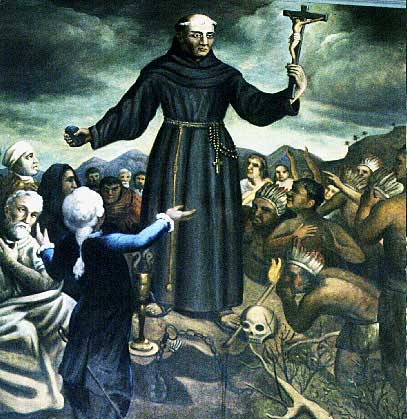

About Old Mission San Juan Bautista

THE OLD MISSION SAN JUAN BAUTISTA...began with a group of leather-jacketed soldiers and a few Native Americans watching a tonsured Franciscan priest raise his eyes and hands toward the sky...
"In the name of our blessed Father, and the saint whose feast we commemorate today, St. John the Baptist..."
The day was June 24, 1797, a Saturday, and the priest was Fr. Fermin Francisco de Lasuen, Presidente of the California Missions and successor to Blessed Junipero Serra. This mission was one of four established by Fr. Lasuen that summer of `97 and the fifteenth of the twenty-one missions in Alta California.
Construction began almost immediately under the care of Fathers Jose Manuel de Martiarena and Pedro Martinez. By Christmas, because of the friendly and cooperative indigenous people, not only was there an adobe church built but also a granary, barracks, a monastery, and some adobe houses.
In June 1803, the cornerstone was laid for the present church. With three naves or aisles, it became the widest of all of the mission churches. It was dedicated on June 23, 1812. Padre Esteban Tapis is buried in the sanctuary of the church. He was, at one time, Presidente of the Missions and he is the founder of the Mission Santa Ines. When he retired from office he came to San Juan Bautista where his musical talents brought fame and a new name to San Juan, "THE MISSION OF MUSIC." Two of his handwritten choir books can be seen in the Museum.
Interior completion of the church continued through 1817 when the floor was tiled and the main altar and reredos (which holds the six statues of the Saints) were completed by Thomas Doak, an American sailor who had jumped ship in Monterey and who painted the altar screen in exchange for room and board.
As you walk through the church, please note the animal prints in the tiles which were made while the tiles were left outside to dry in the sun. Also, note the "Cat Door" carved into the rear side door. This allowed the cats access at all times to catch mice. Mice were serious pests in the 1800's, eating much of the harvest.
Text by Old Mission San Juan Bautista.
Photographs & Web Site Design by Ruben G. Mendoza, 1998.
All Rights Reserved.